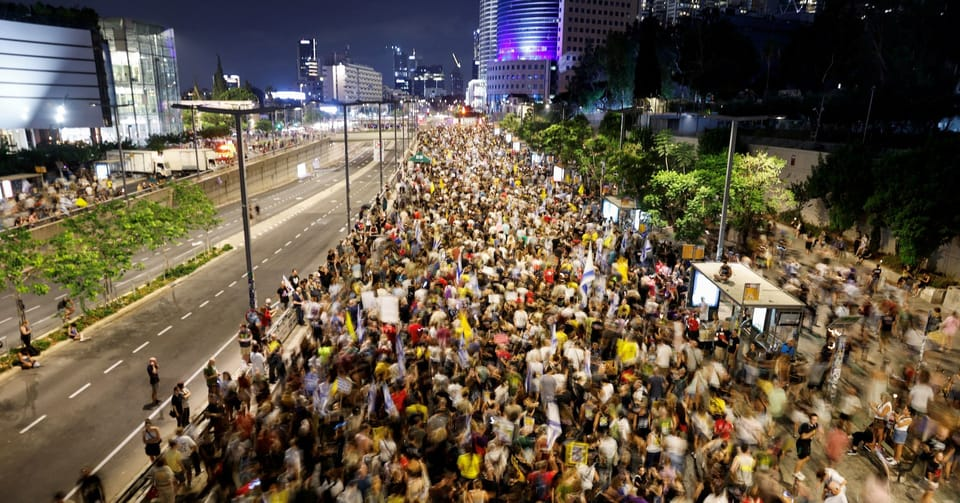

世界苦茶08月11日新闻 | 36条 | 湖南男子因言获罪得到赔偿

湖南男子因言获罪得到赔偿 | 中国此前炮击日本护卫舰 | 英伟达AMD上缴中国收入的15% | 以色列民众抗议加沙计划大游行
欢迎关注新文章平台SUBSTACK，一周2-3更
每日三條新聞解析
苦茶数据
美元兑人民币：7.18（昨日7.18，前日7.18）
美元兑日元：147.82（昨日147.32，前日147.30）
上证指数：休市（昨日3635，前日3637）
标普500指数：休市（昨日6389，前日6340）
比特币：119026（昨日117949，前日116495）
布伦特原油：66.11（昨日66.59，前日66.15）
中国新闻
• 上半年免签入境增五成 ：中国移民管理局数据显示，今年上半年，免签入境中国的外国人1364万人次，同比增长53.9%。综合央视新闻和经济日报报道，中国移民管理局星期日召开新闻发布会说，上半年出台实施亚细安国家旅游团入境云南西双版纳免签政策，新增印度尼西亚为中国240小时过境免签政策适用国家，移民管理局积极会同相关主管部门推进外籍人员支付、住宿、交通等便利化，有效促进了中外人员往来和经贸合作。去年12月，中国移民管理局全面优化过境免签政策，将外国人过境免签停留时间延长到10天。
• 小马可斯推南海准则 ：菲律宾总统小马可斯说，菲律宾将在2026年出任亚细安轮值主席国期间，全力推动达成有约束力的《南中国海行为准则》，以明确界定每个签署国的责任，避免南中国海局势升级。《马尼拉时报》报道，小马可斯在星期五晚上播出的播客节目中，被问及菲律宾接任亚细安轮值主席国后，会否采取更具体的措施推进及完成制定《南中国海行为准则》。他回答说：“我们一定会努力，因为这非常、非常重要。届时，不仅是我们，所有国家都将清楚知道规则。”他还说，《南中国海行为准则》落实后，南中国海周边国家就不会再互相指责对方造成船只碰撞或填海造岛。“这种事不会再发生，因为我们已签署协议，同意不会再那样做。”
• 香港公司注册数创新高 ：香港特首李家超说，截至今年7月底，注册香港公司总数超过150万家，注册非香港公司超过1万5000家，双双写下新纪录。香港特区行政长官李家超星期天在脸书发布《施政·再报告》短片指出，全球独一无二的双向平台功能和优势，令香港既能吸引外资来港开拓业务并探索中国大陆市场，又能协助大陆企业进军海外。不少外资企业在香港找到商机，开店后不断扩张；也有不少陆企信赖香港能力，联同“港队”一起探索海外新兴市场。自2023年1月至今年7月，投资推广署已协助1333间企业在香港开设或扩展业务，引入1740亿港元首年直接投资，并创造逾1万9000个新职位。
• 广东新增1387例登革热 ：中国广东省过去一周新增1387例基孔肯雅热本地病例，绝大多数出在佛山。传染病专家说，虽然佛山市疫情快速上涨势头已得到初步遏制，但疫情防控还不能松劲。广东省疾控局星期天在官方微信号发布，上星期天0时至星期六24时，全省新增报告1387例基孔肯雅热本地病例，未报告重症和死亡病例。病例分布在佛山1212例，广州103例，湛江39例，清远六例，深圳、珠海各五例，中山四例，惠州三例，韶关、东莞各两例，汕头、江门、阳江、潮州、揭阳、云浮各一例。
• 北京再发山洪预警 ：中国首都北京市再发山洪灾害预警，密云等四区未来四天或有山洪灾害。北京市应急管理局星期天在微信公众号通报，市水务局与市气象局当天下午1时发布山洪灾害蓝色预警。预计星期天下午1时至星期四上午8时，北京市密云区、平谷区、延庆区、怀柔区可能发生山洪灾害。有关当局请公众远离山洪沟道，暂停涉山涉水户外活动，防范山洪灾害。
• 四川至江淮将有暴雨 ：中国四川盆地至江淮一带部分地区，从星期天至星期一有大到暴雨，局地大暴雨。据中国天气网消息，监测显示，星期六上午八时至星期天清晨六时，四川盆地西部、陕西南部、湖北中西部、河南中南部、苏皖中北部、山东南部和半岛等地部分地区出现暴雨或大暴雨，四川德阳局地特大暴雨。星期天至星期一，降雨核心区还将进一步南压，四川盆地至江淮一带部分地区有大到暴雨，局地大暴雨。
• 中科院涉腐被查处 ：中央纪委国家监委披露中科院管理层人员套取科研经费、搞权钱交易等腐败问题，已将涉事者查处。中央纪委国家监委网站星期天刊发题为《做实做细政治监督 深化正风肃纪反腐 为加快建设科技强国提供坚强保障》的文章。文章披露，今年上半年，中央纪委国家监委驻中国科学院纪检监察组严肃查处某研究所原副所长，以虚假合同方式套取科研经费；以及某中心原副主任和某企业原董事长，利用项目管理权搞权钱交易等腐败问题。
• 抗战胜利80周年演练 ：中国官媒报道，纪念抗日战争暨世界反法西斯战争胜利80周年大会第一次综合演练结束，约2万2000人参加演练及现场保障工作。据新华社报道，星期六夜间至星期天凌晨，北京天安门地区举行了纪念抗日战争暨世界反法西斯战争胜利80周年大会第一次综合演练，约2万2000人参加演练及现场保障工作。据报道，第一次综合演练包括纪念大会仪式等内容，重点磨合了纪念大会全流程各要素的内部衔接，全面检验了各方组织保障和指挥运行工作，演练组织有序，达到预期目标。北京市有关方面说，此次演练活动顺利完成。
• 湖南男子撤销拘留获赔 ：因评论被行政拘留的男子经两年三审最终撤销处罚。2023年7月5日，湖南湘阴县男子肖新良在一条该县消防员救援从4楼坠落2楼脚手架平台的人员视频下评论：“还在搞豆腐渣工程，统一招牌？”另有网友在其评论下留言，暗指时任县委书记李镇江有亲戚开办广告公司。2023年7月7日，湘阴县公安局以“寻衅滋事”为由，将肖新良行政拘留5日。肖新良在被释后向汨罗市法院提起行政诉讼。汨罗市法院驳回诉讼请求。汨罗市法院判决书说：“肖新良发表的评论意见与他人的恶意诋毁评论点赞具有延伸性、扩展性，对湘阴县委政府及领导个人产生了一致性的负面政治影响”破坏了社会公共秩序，构成寻衅滋事。肖新良向岳阳市中院起诉，但被驳回。他随后向湖南省高院上诉。2025年6月25日，湖南省高院判决撤销行政处罚，赔偿人身自由赔偿金2377.60元。湖南省高院判决书表示：“肖新良发表该评论虽不当……社会不良影响轻微，可以予以批评教育，但认定为扰乱公共秩序或者寻衅滋事的证据不足。”目前，湘阴县公安局已履行再审判决，并按要求支付人身自由赔偿金。针对该案涉及的执法司法行为，岳阳市公安局、市中级人民法院已启动调查程序，并将依据调查结果依法依规作出处理。
• 中方警告射击日舰凉月号 ：针对2024年7月侵入中国领海的日本“凉月”号护卫舰，中方罕见发射至少两发炮弹做警告射击，炮弹并未击中“凉月”号。多名中日消息人士10日透露，中方在发现“凉月”号驶向中国领海后，多次要求该舰变更航路。在“凉月”号侵入领海前警告射击发射了一枚炮弹，在侵入领海后又发射了一枚炮弹促使其驶离。彼时“凉月”号的海图并未显示出中国领海，因此并未意识到侵入了他国领海。尽管受到警告射击，仍在中国领海航行了约20分钟。
亚太印太新闻
• 韩团体示威被立案调查 ：近期在中国驻韩国大使馆附近示威的韩国社会团体，被韩国警方立案调查。据韩联社报道，首尔南大门警察署近日传唤支持前韩国总统尹锡悦的右翼团体“自由大学”相关人员，于星期一到案接受调查。7月22日晚，这个团体曾在首尔的中国驻韩大使馆附近举行一场旨在谴责选举舞弊的集会，其间撕毁印有中国国旗以及中国驻韩大使戴兵等人物头像的横幅，以及对中国驻韩大使馆方面进行侮辱。
• 拉脱维亚国会团访台 ：波罗的海国家拉脱维亚国会团星期天访台，将与台湾副总统萧美琴会面，并参访亚洲无人机AI创新应用研发中心。根据台湾外交部官网发布的新闻稿，拉脱维亚国会友台小组主席契尔钱妮于8月10日至14日率领“国会友台小组访问团”一行八人访台。这是拉国国会近年来首次组团访台。台外交部说，访问团在台期间将同萧美琴会面，接受台外交部长林佳龙及国安会议秘书长吴钊燮款宴，并将拜会立法院长韩国瑜、国防部军政副部长柏鸿辉、大陆委员会副主委沈有忠及经济部国际贸易局局长刘威廉等，另将参访亚洲无人机AI创新应用研发中心、新竹科学园区管理局及工业技术研究院。
• 越南捣毁跨境代孕团伙 ：越南警方在跨省协同行动中捣毁一个由中国人主导的大型跨境非法代孕团伙，解救11名婴儿，逮捕多名嫌犯，包括三名中国公民。越南新闻网报道，越南公安部刑事警察局星期五通报，这个团伙组织严密，头目是一名王姓男子，涉案人员遍布多个国家。他们利用社交媒体、安全通信网络和假身份进行商业代孕活动，以逃避警方侦查。警方在社媒发现涉及跨国商业代孕的可疑活动后展开调查，并根据所掌握的线索，于7月15日在越南多地展开连串突击行动，成功解救11名婴儿，其中最小的仅出生九天，最大的也只有三个月。这些婴儿目前由越南妇女联合会妇女与发展中心属下机构负责照料。
• 韩国军队六年缩减两成 ：报告称，韩国军队规模在过去六年中缩减20%，目前仅剩45万人，主要由于达到义务兵役年龄的男性人口急剧下降。路透社报道，韩国国防部在星期天发布的报告中指出，可供服兵役的男性人数急剧下降也导致军官数量不足，如果这种情况持续下去，可能会给军事行动带来困难。21世纪初，韩国约有69万士兵，但近年来军队规模一直稳步下降。2010年代后期，下降速度加快，2019年现役士兵和军官人数约为56.3万人。
• 民众党维持两年条款 ：台湾在野民众党已经通过决议维持两年条款，这意味着包括民众党主席黄国昌在内的七位民众党不分区立委，都将在明年1月31日请辞，离开立法院。民众党不分区立委有两年条款规定，即任职两年后将卸任，让不分区立委名单的其他人出任立委。综合中时新闻网、联合新闻网、Newtalk新闻等台媒报道，民众党星期天上午在桃园举办党代表大会，会议中讨论修改党章、2026提名办法，以及党代表提案，其中提案包括两年条款的存废议题。
• 朝鲜拆除对韩扩音器 ：韩国联合参谋本部周六表示，朝鲜开始拆除用于对韩喊话的扩音器装置。联参当天向国防部跑口记者团发送短信介绍称，韩军发现朝军从当天上午起在部分前沿地区拆除对韩喊话扩音器。朝军是否在边境全线拆除扩音器还有待考证，韩军将持续关注朝方动向。朝方共设有40多处对韩扩音器，部分地区已完成拆除工作。分析认为，朝方此举是对韩方日前拆除对朝扩音器的响应。韩军8月4日开始拆除边境地区的对朝扩音器，仅一天后就将20余部固定式扩音器全部拆除完毕。
科技新闻
• 日媒诉美企侵权AI文章 ：读卖新闻集团8月7日宣布，美国的一家公司在其生成式AI搜索服务中擅自使用了该集团的文章，为此，已向法院提起诉讼，要求法院禁止其使用该集团文章，并赔偿损失21亿余日元等。据代理人的律师称，这是日本国内大型媒体首次就利用生成式AI侵犯著作权的问题提起诉讼。该集团称，Perplexity自今年2月至6月期间，共获取了约12万篇文章，侵犯了其著作权，为此，该集团已于8月7日向东京地方法院提起诉讼，要求法院禁止其使用文章，并赔偿损失21亿余日元。
• 中方望美放宽AI芯片管制 ：英国媒体报道，中国希望美国在美中领导人可能举行的会晤前，放宽对人工智能晶片关键部件的出口管制，以达成贸易协议。路透社星期天转述英国《金融时报》报道这则消息。知情人士称，中国官员已告知华盛顿的专家，中国方面希望特朗普政府放宽对高带宽存储芯片的出口限制。HBM是一种新型存储技术，可满足人工智能等现代高性能计算需求，因其能很快处理有大量数据的AI任务，尤其是能搭配英伟达的AI图形处理器使用，一直以来受到市场和投资者的密切关注。
财经新闻
• 宝马召回23万辆车 ：宝马因安全隐患在中国召回超过23万辆进口及中国国产汽车，大多为i系电动汽车。中国国家市场监督管理总局星期五在官网公告，宝马和华晨宝马备案上述召回计划。这次召回车型以i系电动汽车为主，超过22万辆，包括国产i3、iX1、i5及进口i4、i7、iX等。这些车辆由于绝缘故障的监测机制问题，在特定工况下，高压系统可能出现误关闭的情况，造成电气驱动单元失去动力，增加车辆发生碰撞的风险。
• “树拍”平台涉诈骗被查 ：投资平台“树拍”涉嫌传销日前被立案调查，曾因系统瘫痪无法提现引发投资者上街聚集维权，警方最新通报平台涉嫌集资诈骗，多名嫌犯已被依法采取刑事强制措施。中国山东省临沂市公安局罗庄分局星期天通报，称2024年3月以来，王姓、崔姓等犯罪嫌疑人开发并运营“树拍”APP，利用平台参拍委拍模式，以非法占有为目的，以高额回报为诱饵，向社会不特定群体募集资金。多名嫌犯已被依法采取刑事强制措施，正推进案件侦办、司法审计、追赃挽损等工作。警方请参与集资的公众30天内报案，以全力追赃挽损，尽力追回投资者所投的钱。
• 宁德时代停产江西锂矿 ：中国电池巨头宁德时代据报已暂停江西省一座大型锂矿的生产至少三个月。彭博社星期天引述知情人士说，宁德时代已经在内部宣布，枧下窝矿将暂时停产。其中一名知情人士说，附近宜春的关联冶炼厂已收到通知。交易商一直在密切关注枧下窝矿，以及原定于星期六到期的采矿许可证的延期事宜。
• 官媒批英伟达芯片不安全 ：中国国家互联网信息办公室在7月31日约谈美国晶片巨头英伟达后，中国官媒星期天发文提到美国对晶片安装后门的手法，并批评英伟达H20晶片不安全、不先进，以及不环保。中国国家互联网信息办公室在7月31日约谈了英伟达，要求说明晶片的漏洞或后门的安全风险问题，并提交相关证明材料。中国央视旗下新媒体“玉渊谭天”星期天（8月10日）发文指出，后门主要分为两种，硬件后门和软件后门。文章称，硬件后门是晶片在设计或制造时留下的物理装置，主要是具有后门功能的逻辑电路；软件后门可以理解为在软件中植入具有后门功能的指令，通过运行软件来对用户的系统造成破坏、窃取机密等。
• 存取超5万元或免登记 ：中国金融机构反洗钱监管规则重大调整，民众单笔存取超5万人民币或无需再登记。据21世纪经济报道，中国人民银行、国家金融监督管理总局、证监会联合发布《金融机构客户尽职调查和客户身份资料及交易记录保存管理办法（征求意见稿）》。征求意见稿已于8月4日起向社会公开征集意见，截止日期为9月3日。
• 广东7月CPI下降0.3% ：中国广东省7月份居民消费价格指数同比下降0.3%，工业生产者出厂价格指数同比下降2.0%。据人民财讯报道，中国国家统计局广东调查总队星期天发布数据。数据显示，7月份，广东CPI同比下降0.3%，降幅比上月收窄0.1个百分点；环比由上月下降0.2%转为上涨0.5%。1—7月平均，广东CPI比上年同期下降0.4%。
• 娃哈哈砍年销低经销商 ：中国饮料巨头娃哈哈据报正在陆续砍掉年销低于300万元人民币的经销商。据第一财经报道，娃哈哈董事长兼总经理宗馥莉上任之后，很多经销商的销售任务大增。报道引述湖南一名娃哈哈经销商处称，全年销售额任务是从今年开始增加的，比2024年增长了50%。这名不具名经销商说，如果在一定时间内未完成销售额任务、连续出现负增长或者配置不达标等情况，会直接被取消经销权。一名山西运城市的娃哈哈经销商也说，如果连续两个月销售额不达标，可能会被取消经销商资格。
• 英伟达AMD上缴中国收入15% ：英伟达、AMD同意将公司中国芯片销售收入的15%上缴美国政府，作为与特朗普政府达成了一项不同寻常的安排，旨在获得芯片出口许可证。据一名美国官员等知情人士透露的消息，这两家芯片制造商同意了这一财务安排，作为获得上周颁发的中国市场出口许可证的条件。这名美国官员表示，英伟达、AMD分别同意将其在中国销售H20、MI308芯片收入的15%上缴美国政府。两名知情人士称，特朗普政府尚未决定如何使用这笔资金。美国商务部已于上周五开始发放H20芯片的出口许可证，恰好在英伟达CEO黄仁勋与美国总统特朗普会面两天之后。 （翻評：我覺得如果美國政府這些問題都可以靠保護費決定，國安問題都可以交易？另外這個錢以什麼明目上繳呢？）
俄乌战争
• 欧盟称乌和平须基辅参与 ：多名欧洲国家领导人强调，乌克兰的“和平之路”必须在基辅参与下决定，谈判只能在实现停火或缓和敌对行动的背景下展开。路透社报道，英国、法国、德国、意大利、波兰、芬兰领导人及欧盟委员会主席冯德莱恩星期六在联合声明中重申，他们坚持“国际边界不得以武力改变”的原则，并指出，“当前的接触线应作为谈判的起点”。该声明发表的前一天，美国总统特朗普宣布，将与俄罗斯总统普京会面，讨论结束乌克兰战争。
• 白宫考虑乌加入峰会 ：白宫官员星期六称，美国总统特朗普对在阿拉斯加与俄罗斯总统普京和乌克兰总统泽连斯基举行三方峰会持开放态度，但目前将按普京的要求，先行安排美俄双边会晤。此前，美国全国广播公司报道，白宫正考虑邀请乌克兰总统泽连斯基前往阿拉斯加，与将于8月15日会晤俄罗斯总统普京的美国总统特朗普同地出席活动。
• 德媒称泽连斯基或出席峰会 ：德国总理默茨星期天说，德国推测乌克兰总统泽连斯基将于下星期五出席美国总统特朗普与俄罗斯总统普京的峰会。法新社报道，尽管乌克兰和欧洲一直呼吁让基辅参与谈判，但普京和特朗普将在美国阿拉斯加州会晤，探讨解决持续三年的俄乌战争。默茨在接受德国电视一台采访时说：“我们希望并假设乌克兰政府和泽连斯基总统能够参与此次会晤。”
• 泽连斯基赞欧盟联合声明 ：乌克兰总统泽连斯基星期天说，基辅“重视并全力支持”欧洲领导人就实现乌克兰和平、同时维护乌克兰和欧洲利益所发表的联合声明。路透社报道，法国、意大利、德国、波兰、英国、芬兰和欧盟委员会领导人星期六对美国总统特朗普为结束战争所做的努力表示欢迎，但强调有必要向俄罗斯施压，并为基辅提供安全保障。泽连斯基在社媒平台X上写道：“战争的结束必须是公平的，我感谢今天所有为了和平与乌克兰和我国人民站在一起的人，乌克兰的和平捍卫了欧洲国家至关重要的安全利益。
• 万斯表示，和解难令双方满意 ：美国副总统万斯说，俄罗斯和乌克兰通过谈判达成的和解不太可能让任何一方满意，任何和平协议都可能让莫斯科和基辅“不满意”。他说，美国的目标是达成两国都能接受的解决方案。路透社报道，万斯在星期天播出的福克斯新闻采访中说：“这不会让任何人非常满意。俄罗斯和乌克兰最终可能都会对此感到不满意。”美国总统特朗普将于下星期五在阿拉斯加与俄罗斯总统普京会面，就结束俄乌战争进行谈判。
国际新闻
• 内塔尼亚胡为加沙计划辩护 ：以色列总理内坦亚胡星期天在联合国安理会举行紧急会议之前举行新闻发布会，为他“控制”加沙城的计划辩护。内坦亚胡说，加沙城计划是“结束战争且迅速结束战争的最好方式”。他说，哈马斯在加沙地带仍有数千名武装恐怖分子，他们的目标是摧毁以色列，并补充称，加沙人“恳求我们和全世界”帮助他们摆脱哈马斯。
• 五名半岛电视台记者在加沙地带遭以色列空袭身亡： 据半岛电视台报道，以色列空袭袭击了加沙希法医院的媒体帐篷，至少造成五名半岛电视台记者和媒体工作人员丧生。遇难者包括著名记者阿纳斯·沙里夫和穆罕默德·卡雷基。半岛电视台援引加沙市希法医疗中心负责人的话称，当地时间周日晚，记者阿纳斯·沙里夫和穆罕默德·卡雷基在医院附近的帐篷遭袭身亡。半岛电视台随后更新消息称，死亡人数已上升至五人，其中包括摄影师兼摄像师易卜拉欣·扎希尔、穆罕默德·努法尔和莫阿门·阿里瓦。以色列国防军证实，他们有意袭击沙里夫，并指控他是“一名冒充半岛电视台记者的恐怖分子”。以色列国防军声称他参与了武装活动，并利用记者的身份作为掩护。
• 澳新促以色列撤回加沙计划 ：澳大利亚和新西兰领导人警告，以色列控制加沙城可能违反国际法，应重新考虑计划。彭博社报道，澳洲总理阿尔巴尼斯和新西兰总理拉克森星期六在一份联合声明中说：“我们敦促以色列政府在为时已晚之前重新考虑。任何迫使巴勒斯坦人口永久流离失所的提议都必须放弃。”8月8日，以色列总理内坦亚胡的安全内阁批准了“击败哈马斯”行动，即控制加沙城。此举可能导致居住在加沙城的100万名巴勒斯坦人流离失所，引发全球的强烈反对。
• 以色列民众抗议加沙计划 ：数万名抗议者星期六走上特拉维夫街头，在特拉维夫举行大规模游行集会，抗议以军接管加沙地带北部加沙城计划，要求迅速结束在加沙地带的战争。路透社报道，一天前，总理办公室宣布，安全内阁已决定夺取加沙城，扩大在加沙地带的军事行动。此举不仅引发国内舆论普遍反对，也遭军方警告，称可能危及人质安全。据了解，安全内阁最快将在星期天批准这一决定。人质奥姆里·米兰的妻子莉沙伊·米兰·拉维在集会上说：“这不仅是一个军事决定，它可能会成为我们最爱之人的死刑判决。”
• 全球多地海滩加速消失 ：从美国迈阿密到西班牙巴塞罗那，再到澳大利亚黄金海岸，全球多地海滩正因气候变化和人类活动加速消失。《金融时报》报道，沙子虽看似取之不尽，却是抵御风暴与洪水的天然屏障。一旦流失，不仅威胁旅游经济，也危及沿海居民的生存安全。在美国北卡罗来纳州外滩群岛的小镇罗丹塞，海岸侵蚀速度位居东海岸前列，每年退缩3至4.5米。自2020年以来，已有11栋房屋倒塌入海，更多建筑岌岌可危。当地常从近海或河道抽砂回填沙滩，但为罗丹塞补沙需逾4000万美元，资金缺口迫使居民在“有序撤离”或留守冒险间做选择。